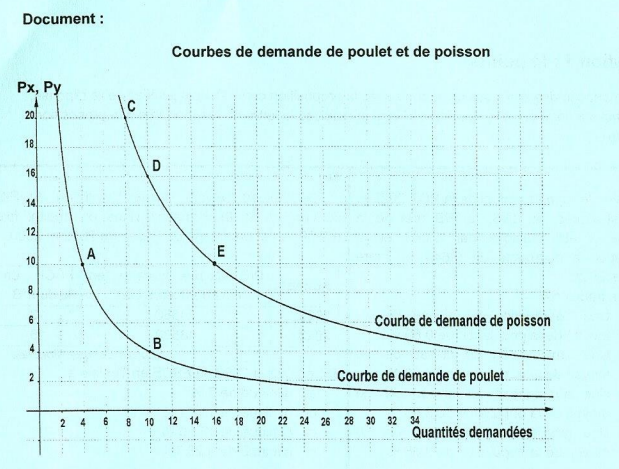

Économie
Bac 2025 – Session Principale
Épreuve officielle simulée — Section Économie & Gestion
Clique sur chaque verbe pour comprendre ce qu'attend le correcteur.
⚠️ Ne pas confondre avec "décrire".
⚠️ Toujours préciser les critères de distinction.
⚠️ Ne pas se limiter à une énumération.
⚠️ Décrire sans interpréter = 0 pt.
⚠️ Affirmer sans justifier = non recevable.
⚠️ Le plan doit être annoncé en introduction.
📌 Recommandations officielles – Épreuve d'Économie
- ✅ Lire attentivement chaque question.
- ✅ Commencer par la question la plus facile.
- ✅ Pour la dissertation : dégager la problématique.
- ✅ Rédiger introduction, développement (2 parties), conclusion.
- ✅ Utiliser les documents fournis.
- ✅ Présenter les calculs sur la copie.
- ✅ Soigner la présentation et l'écriture.
- ✅ Vérifier les unités (millions de dinars, pourcentage, etc.).
Ce que tu dois savoir
Notions ciblées pour cette épreuve uniquement
La théorie de l'utilité explique comment un consommateur choisit le panier d'équilibre qui maximise sa satisfaction sous contrainte de revenu.
• U(x,y) = fonction d'utilité du consommateur
• TMS = Umx / Umy = (∂U/∂x) / (∂U/∂y)
• À l'équilibre : TMS = Px / Py
• Contrainte budgétaire : R = x.Px + y.Py
• Panier : résoudre TMS = Px/Py + R = xPx+yPy
U(x,y) = 10 . x¹/⁵ . y⁴/⁵
Px=10, Py=20, R=200 → TMS = y/4x = 10/20 = 1/2 → y=2x
x* = 4 kg, y* = 8 kg, U* = 80 . 2⁴/⁵
• Maximiser U sous contrainte = TMS = Px/Py
• Panier hausse prix → substitution vers le bien moins cher
• Hausse d'un seul prix ≠ inflation
La DIPP consiste à scinder la production d'un bien à l'échelle mondiale. Le processus est divisé en sous-ensembles réalisés chacun dans un pays différent par une filiale atelier.
• Filiale atelier → spécialisée dans 1 composant
• Échanges générés = échanges intra-firmes
• Flux : firme mère ↔ filiales (biens équipement, pièces détachées, composants)
• DIPP = fragmentation mondiale de la production
• Génère des échanges intra-firmes
• Prend de l'importance dans le commerce mondial
La concentration verticale est le regroupement d'entreprises situées à des stades DIFFÉRENTS de la même filière de production. En amont (fournisseurs) ou en aval (clients).
• AMONT : intègre fournisseurs → Objectif : maîtriser approvisionnements
• AVAL : intègre clients → Objectif : maîtriser conditions d'écoulement
• Amont = maîtriser les entrées
• Aval = maîtriser les sorties
• Les deux → réduire dépendance fournisseurs/clients
La croissance économique est l'augmentation durable de la production de biens et services, mesurée par le PIB.
• TCA du PIB = ((PIBn − PIBn-1) / PIBn-1) × 100
• Coefficient multiplicateur = PIBn / PIBn-1
• TCA = (CM − 1) × 100
• PIB réel par habitant : TCA PIB réel/hab = TCA PIB réel − TCA population
• FBCF = (FBCF% × PIB nominal) / 100
CM PIB réel = 1,043 → TCA = 4,3%
Population +0,644% → TCA PIB réel/hab = 4,3 − 0,644 = 3,65%
→ Amélioration du niveau de vie de 3,65%
Sources : PGF (progrès technique) + Accumulation des facteurs K et L
• TCA = (CM−1)×100
• PIB réel/hab = mesure niveau de vie
• PGF + facteurs = sources de croissance
La croissance économique peut menacer l'environnement naturel (pollution, épuisement ressources) mais une croissance verte et l'économie circulaire permettent de le préserver.
• Pollution eau, air, sol
• Épuisement ressources non renouvelables
• Déforestation, désertification, crise climatique, perte biodiversité
• Croissance traditionnelle → dégradation
• Croissance verte + éco-circulaire → préservation
• Développement durable = équilibre éco/soc/envir
Les indicateurs économiques servent à évaluer la performance d'une économie.
• Solde commercial = Exportations - Importations
• FBCF = (FBCF% × PIB nominal) / 100
• Taux de croissance du PIB = ((PIBn - PIBn-1) / PIBn-1) × 100
FBCF 2022 = (18 × 44 580) / 100 = 8 024,4 M$
FBCF 2023 = (16 × 48 530) / 100 = 7 764,8 M$
TCA FBCF = ((7 764,8 − 8 024,4) / 8 024,4) × 100 = −3,23%
• Solde commercial = Exports − Imports
• FBCF mesure l'investissement
• Toujours vérifier les unités (millions, %, points)
Ministère de l'Éducation
EXAMEN DU BACCALAURÉAT
[ ][ ][ ][ ][ ][ ][ ][ ]
Item 1 : Selon le rapport annuel de la BCT 2022 et les statistiques de l'INS, le PIB réel de la Tunisie a été multiplié par 1,043 et la population a augmenté de 0,644 %, entre 2020 et 2021. Ceci se traduit par :
Justification : Coefficient multiplicateur (CM) du PIB réel = 1,043. TCA du PIB réel = (CM − 1) × 100 = 4,3 %. PIB réel par habitant = TCA PIB réel − TCA population = 4,3 % − 0,644 % = 3,65 %. → Amélioration du niveau de vie de 3,65 %.
CM du PIB réel = ________ ; TCA du PIB réel = ________ %.
PIB réel par habitant = TCA PIB réel – TCA population = ________ %.
Item 2 : Le tableau suivant illustre l'évolution du PIB nominal et de la formation brute du capital fixe (FBCF) en pourcentage du PIB entre 2022 et 2023.
| Années | PIB aux prix courants (en millions de dollars US) | FBCF en % du PIB |
|---|---|---|
| 2022 | 44 580 | 18 |
| 2023 | 48 530 | 16 |
Source : Banque Mondiale
Entre 2022 et 2023, la FBCF en Tunisie a :
Justification : FBCF = (FBCF en % du PIB × PIB nominal) / 100. FBCF 2022 = (18 × 44 580) / 100 = 8 024,4 M$. FBCF 2023 = (16 × 48 530) / 100 = 7 764,8 M$. TCA FBCF = ((7 764,8 − 8 024,4) / 8 024,4) × 100 = −3,23 %.
FBCF 2022 = ________ ; FBCF 2023 = ________.
TCA FBCF = ________ %.
Item 3 : Pour produire 8 articles sanitaires, l'entreprise « Succès » utilise la fonction de production de la forme : Q (L, K) = 2 . L²/³ . K¹/³. L'équation de la courbe d'isoquant est :
Justification : 2 . L²/³ . K¹/³ = 8 → K¹/³ = 4 / L²/³ → K = 64 / L².
Q = 8 → 2 . L²/³ . K¹/³ = 8 → K¹/³ = ________ → K = ________.
Item 4 : Selon les données de l'OCDE en Allemagne, l'accroissement des richesses créées de 2 % en 2016 est expliqué à hauteur de 60 % par la productivité globale des facteurs (PGF) ; alors la contribution de l'accumulation des facteurs de production à cette croissance économique est égale à :
Justification : 60 % de 2 % provient de la PGF = 1,2 point de %. Le reste (40 % × 2 %) = 0,8 point de % est expliqué par l'accumulation des facteurs de production.
Part PGF = 60 % × 2 % = ________ point.
Part facteurs = 2 % – 1,2 % = ________ point.
CM du PIB réel = 1,043 ; TCA du PIB réel = (1,043 − 1) × 100 = 4,3 %. PIB réel/hab = 4,3 − 0,644 = 3,65 %.
Item 2 : Réponse d — diminué de 3,23 %.
FBCF 2022 = (18 × 44 580) / 100 = 8 024,4 ; FBCF 2023 = (16 × 48 530) / 100 = 7 764,8 ; TCA = −3,23 %.
Item 3 : Réponse a — K = 64 / L².
2 . L²/³ . K¹/³ = 8 → K¹/³ = 4 / L²/³ → K = 64 / L².
Item 4 : Réponse b — 0,8 point de %.
60 % de 2 % = 1,2 point de % (PGF). Reste : 2 − 1,2 = 0,8 point de % (facteurs de production).

1- Dégagez les prix des biens X et Y dans le cas où « Youssef » maximise sa satisfaction par l'achat de 4 kg de poulet et 8 kg de poisson et en déduire le budget mensuel nécessaire :
Px = ________ DT ; Py = ________ DT ; R = ________ DT.
2- Déterminez analytiquement le panier d'équilibre de « Youssef » ainsi que la valeur de son utilité maximale, dans le cas où Px = 10 DT et Py = 20 DT :
TMS = y / 4x ; à l'équilibre TMS = Px/Py = ________ → y = 2x.
R = 10x + 20(2x) = 50x → x* = ________ kg, y* = ________ kg.
U* = ________.
2- TMSxy = Umx / Umy = y / 4x. À l'équilibre, TMSxy = Px / Py = 10/20 = 1/2. Ainsi, y / 4x = 1/2, donc y = 2x. R = 10x + 20(2x) = 50x = 200 → x* = 4 kg, y* = 8 kg. U = 10 . (4)¹/⁵ . (8)⁴/⁵ = 10 . 4 . 2⁴/⁵ = 80 . 2⁴/⁵.
3- Durant le mois de Ramadan, le prix d'un kg de poulet a augmenté de 25 %, calculez le nouveau panier d'équilibre sachant que le prix de poisson et le budget restent inchangés. Que constatez-vous ?
P'x = 12,500 DT ; TMS = P'x/Py = ________ → y = ________.
R = 12,5x + 20(2,5x) = 62,5x → x'' = ________ kg, y'' = ________ kg.
Constatation : l'augmentation du prix du poulet de 10 DT à 12,500 DT s'est accompagnée d'une baisse de la quantité achetée de poulet passant de 4 à ________ kg avec le maintien de la quantité achetée de poisson à ________ kg.
4- Expliquez pourquoi cette hausse du prix de poulet n'est pas signe d'inflation :
La hausse du prix du poulet durant le mois de Ramadan n'est pas signe d'inflation car cette hausse est ________ (mois de Ramadan) et ne concerne que le prix du ________, sans toucher aux prix des autres ________.
Constatation : Baisse de la quantité de poulet (4 → 3,2 kg) et maintien de la quantité de poisson (8 kg).
4- Cette hausse n'est pas signe d'inflation car elle est conjoncturelle (mois de Ramadan) et ne concerne que le prix du poulet sans toucher aux prix des autres biens de consommation.
On entend souvent dire que la croissance économique est en train de tuer notre planète. De fait, de multiples recherches menées depuis des décennies le confirment [...]. Depuis, la population mondiale a plus que doublé et la planète compte aujourd'hui huit milliards d'habitants. Les revenus, et par conséquent la consommation également, ont augmenté partout dans le monde. Cette croissance a eu pour conséquence malheureuse un recul de presque tous les indicateurs environnementaux.
Rien que depuis l'an 2000, le monde a perdu plus de 10 % de son couvert forestier, soit une superficie équivalente à la moitié de celle des États-Unis. La qualité de l'eau baisse dans les pays riches comme dans les pays pauvres, ce qui menace la croissance et nuit à la santé publique. Actuellement, la pollution atmosphérique réduit la durée de vie de 2,2 ans et fait chaque année plus de victimes que l'ensemble des guerres et des diverses formes de violence. Enfin, 40 % des terres sont aujourd'hui considérées comme dégradées, ce qui aggrave la crise climatique, réduit la biodiversité et menace la sécurité alimentaire. Face au déclin de ces composantes vitales du capital naturel, une question cruciale s'impose à nous : pouvons-nous mieux faire ?
Source : Croissance économique pourrait rimer avec protection de la planète, Richard Damania et Jason Russ, Groupe de la Banque Mondiale, 27 Juin 2023
Document 2 :
Notre système économique actuel peut être considéré comme une « économie linéaire », reposant sur un modèle d'extraction de matières premières de la nature, de transformation en produits, puis de rejet comme déchets [...]. Cet état de choses pèse lourdement sur l'environnement et contribue aux crises du climat, de la biodiversité et de la pollution.
L'économie circulaire, en revanche, vise à réduire autant que possible les déchets et à promouvoir une utilisation durable des ressources naturelles, grâce à une conception plus intelligente des produits, à leur plus longue utilisation, à leur recyclage et à d'autres mesures, ainsi qu'à régénérer la nature [...].
Tout autour de nous, nous pouvons observer les approches de l'économie circulaire. Elles peuvent être adoptées dans différents secteurs, par exemple celui du textile ou celui du bâtiment et de la construction, ainsi qu'à diverses étapes du cycle de vie d'un produit, y compris sa conception, sa fabrication, sa distribution et son élimination.
Dans le secteur du textile et de la mode, il existe des initiatives qui utilisent l'agriculture régénérative en vue de produire du coton biologique et d'autres fibres naturelles, en employant des colorants et des teintures naturelles, permettant ainsi la fabrication de vêtements qui sont de meilleure qualité et plus sûrs pour la santé des consommateurs et l'environnement.
Source : Qu'est-ce que l'économie circulaire et pourquoi est-ce important ? PNUD, 26 avril 2023
Amorce + définition :
Considérée souvent comme condition nécessaire pour l'amélioration du bien-être humain, la ________ qui se traduit par l'accroissement durable des richesses créées a des effets mitigés sur l'________.
Problématique :
Dans quelle mesure la croissance économique ________ l'environnement naturel ?
Plan :
Nous montrerons d'abord que la croissance économique ________ l'environnement naturel, puis qu'elle peut le ________.
La croissance économique peut mettre en péril l'environnement naturel. En effet, la croissance économique cause :
La dégradation de l'environnement naturel : Les activités de production (agricoles, industrielles...), sources de croissance, engendrent la pollution sous toutes ses formes (pollution du ________, pollution de l'________, pollution de l'________).
L'épuisement des ressources naturelles : La surexploitation des richesses naturelles entraîne l'épuisement des ressources en eau, la ________, la déforestation, etc. En effet et depuis l'an 2000, le monde a perdu plus de ________ % des forêts.
C'est ainsi que la croissance économique, à travers les activités de production et de consommation, cause la dégradation de l'environnement et l'épuisement des ressources naturelles.
La croissance économique peut préserver l'environnement naturel. En effet, une croissance durable permet :
La lutte contre la dégradation de l'environnement : En adoptant le modèle de l'________, les activités de ________ des déchets permettent de réduire la pollution. De même, l'innovation dans le domaine énergétique (énergies ________) limite l'émission des gaz à effet de serre.
La lutte contre l'épuisement des ressources : Par les activités de la ________, le recyclage et la ________ des matières préservent les ressources naturelles. Dans le textile, l'utilisation du ________ permet la fabrication de vêtements de meilleure qualité.
En somme, une croissance économique plus durable, fondée sur des activités de production et de consommation responsables, permet de lutter contre la pollution, de préserver les ressources naturelles et de protéger l'environnement naturel.
Synthèse : Certes, la croissance économique qui adopte un modèle ________ visant uniquement l'intérêt économique est de nature à mettre en danger l'environnement naturel. Néanmoins, une croissance économique verte et ________ est respectueuse de l'environnement.
Ouverture : Il importe de s'interroger sur les ________ que peuvent rencontrer les économies pour réaliser une croissance économique verte.
Considérée souvent comme condition nécessaire pour l'amélioration du bien-être humain, la croissance économique qui se traduit par l'accroissement durable des richesses créées a des effets mitigés sur l'environnement naturel. Dans quelle mesure la croissance économique menace-t-elle l'environnement naturel ? Nous montrerons d'abord que la croissance économique menace l'environnement naturel, puis qu'elle peut le préserver.
Partie I — La croissance peut menacer l'environnement naturel (3,5 pts) :
La croissance économique peut mettre en péril l'environnement naturel. En effet, la croissance économique cause :
- La dégradation de l'environnement naturel : Les activités de production (agricoles, industrielles...), sources de croissance, engendrent la pollution sous toutes ses formes (pollution du sol, pollution de l'eau, pollution de l'air). Ainsi, les entreprises industrielles polluent l'environnement à travers l'émission de gaz ou le rejet des déchets. De même, la consommation, se traduisant par l'utilisation de certains biens et services, pollue l'atmosphère, l'eau et le sol. Le problème se pose à l'échelle mondiale dans la mesure où la qualité de l'eau a été affectée dans tous les pays du monde.
- L'épuisement des ressources naturelles : La surexploitation des richesses naturelles dans le processus de production entraîne l'épuisement des ressources en eau, la désertification, la déforestation, etc. En effet et depuis l'an 2000, le monde a perdu plus de 10 % des forêts, soit une surface importante équivalente à la moitié de la superficie des États-Unis. De même, l'utilisation excessive des ressources minières, et énergétiques (pétrole, gaz, charbon...) menace ces ressources naturelles non renouvelables par l'épuisement.
C'est ainsi que la croissance économique, à travers les activités de production et de consommation, cause la dégradation de l'environnement et l'épuisement des ressources naturelles.
Partie II — La croissance peut ne pas menacer l'environnement naturel (3,5 pts) :
La croissance économique peut préserver l'environnement naturel. En effet, une croissance durable permet :
- La lutte contre la dégradation de l'environnement naturel : En adoptant le modèle de l'économie circulaire, les activités de recyclage des déchets, qui consistent en la réparation pour réemployer des objets de seconde main et la réutilisation des matières premières et des déchets dans de nouveaux cycles de production, sont en mesure de réduire la pollution de l'eau et du sol. De même, dans le cadre de la croissance verte, la mise en place des installations anti-polluantes par les entreprises et l'innovation dans le domaine énergétique (énergies renouvelables, moins polluantes) permet de limiter l'émission des gaz toxiques à effet de serre, ce qui réduit le réchauffement climatique.
- La lutte contre l'épuisement des ressources naturelles : Par les activités de la croissance verte (de consommation et de production), le recyclage de déchets et leur réutilisation permettent de préserver les ressources naturelles et de les utiliser le plus efficacement possible. Dans le secteur du textile, par exemple, l'utilisation du coton biologique et des fibres, des colorants et des teintures naturelles, permet la fabrication de vêtements de meilleure qualité et de durée de vie plus longue.
En somme, une croissance économique plus durable, fondée sur des activités de production et de consommation responsables, permet de lutter contre la pollution, de préserver les ressources naturelles et de protéger, par conséquent, l'environnement naturel.
Conclusion (1,5 pt) :
Certes, la croissance économique qui adopte un modèle traditionnel visant uniquement l'intérêt économique est de nature à mettre en danger l'environnement naturel. Néanmoins, une croissance économique verte et durable est respectueuse de l'environnement. Il importe de s'interroger sur les entraves que peuvent rencontrer les économies pour réaliser une croissance économique verte.
• Développement (7 pts) : Partie I (3,5 pts) — Partie II (3,5 pts)
• Structuration du développement (1 pt)
• Conclusion (1 pt) : Synthèse (0,5) — Ouverture (0,5)
• Présentation (0,5 pt) : Copie aérée et écriture lisible
Item 1 : Selon le rapport annuel de la BCT 2022...
Item 2 : Le tableau suivant illustre l'évolution du PIB nominal...
Item 3 : Pour produire 8 articles sanitaires...
Item 4 : Selon les données de l'OCDE en Allemagne...